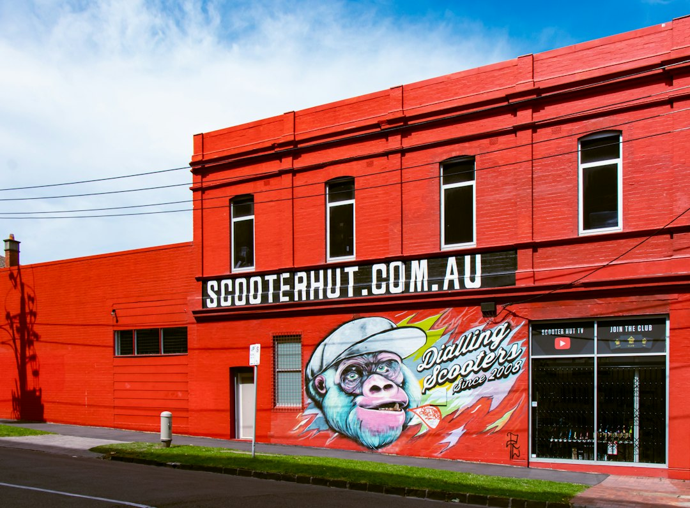

For Melbourne homeowners, a switchboard replacement is usually about retiring old ceramic fuses, adding safety switch protection, allowing for modern circuit breakers and receiving the right certification after the job. The source page gives typical cost ranges of $800 to $3,500+ for single-phase work and $3,000 to $5,000+ for three-phase work, with the final quote dependent on circuit count, wiring condition, scope and complexity.
For homeowners comparing switchboard replacement melbourne options, the useful starting point is not a slogan, but the age of the board, the type of protection fitted and the certification required after installation.
Switchboard Replacement Melbourne Explained
The published information from Switchboard Upgrades Melbourne is most useful when read as a homeowner checklist. It points to older Melbourne homes with ceramic fuse-type boards, rewireable fuses, limited spare capacity and no RCD protection as common reasons to investigate an upgrade.
A board that has not changed since the 1980s or earlier may still work day to day, but it can be a poor fit for how a household now uses power. The source page gives practical examples: fuses that keep blowing, circuits that trip when the heater and kettle run together, and boards without safety switches.
The right first question is what is actually installed. A homeowner can ask the assessing electrician to identify whether the property has old ceramic fuse carriers, modern circuit breakers, RCD safety switches, RCBO devices, spare circuit capacity and any asbestos backing behind the board.
Safety Switches, Circuit Breakers And RCBOs
The source page distinguishes the main protective parts without turning the job into jargon. An RCD safety switch is described as a device designed to cut power when it detects current leaking to earth. Circuit breakers replace rewireable fuses on individual circuits, while an RCBO combines overload protection and safety switch protection in one device.
That distinction matters when comparing quotes. One quote may involve a simple single-phase board swap. Another may include safety switch installation across circuits, circuit breaker replacement, RCBOs or allowance for future circuits. The useful comparison is not just the total price, but what protection and capacity are included.
- Ask which circuits will receive safety switch protection.
- Ask whether the quote uses circuit breakers, RCBOs or a mix of both.
- Ask whether the new board leaves room for later additions such as solar, a smart meter or new appliances.
Single-Phase, Three-Phase And Future Loads
The published cost guidance separates single-phase and three-phase work. It says most homes run on single-phase power, and a single-phase upgrade replaces old fuses with modern circuit breakers and safety switches, with room for future circuits. Three-phase work is described as more involved, usually relevant to larger homes, workshops and properties with higher-draw appliances.
That gives homeowners a grounded way to brief an electrician. Instead of asking only for a replacement price, describe what the home already runs and what may be added later. The source page specifically names solar compatibility, smart meter compatibility and new appliances as reasons to think about capacity during the upgrade.
For a Melbourne property with heavier electrical use, the assessing electrician should scope whether the existing supply and board arrangement are enough. The homeowner does not need to self-diagnose three-phase requirements, but should raise workshops, higher-draw appliances, solar plans and smart meter work before the quote is finalised.
Asbestos-Backed Boards Need A Separate Check
Older ceramic fuse-type boards can have asbestos backing, according to the source page. That does not mean every old board has asbestos, and it does not mean the homeowner should guess from appearance. It means asbestos backing should be a specific quote question before removal begins.
The source page states that removal and disposal must follow WorkSafe Victoria asbestos rules. It also says a trained electrician can handle a small, sound, non-friable board within strict limits, otherwise a licensed asbestos removalist does the job. A quote should therefore make clear who will assess the backing, who will remove it if present and how disposal is handled.
This is one of the places where the cheapest line item may not be the clearest one. If asbestos is suspected, ask whether the price includes removal arrangements or whether that is a separate scope to confirm before the switchboard work proceeds.
Certificates, Inspection And Quote Discipline
The source page says the electrician completes the upgrade and issues a Certificate of Electrical Safety, which Victoria requires for all electrical installation work. It also states that a main switchboard replacement is prescribed work, so an independent licensed electrical inspector checks it under Energy Safe Victoria certificate guidance.
For a homeowner, that turns certification into a quote item, not an afterthought. A practical quote should identify the work to be completed, the board type, the circuit protection included, any asbestos handling allowance, and the certificate process at completion.
The source page also says the final quote comes from the assessing electrician and that the initial quote is no obligation. Use that assessment to test assumptions: whether wiring condition affects the price, whether extra circuits are needed, whether three-phase work is in scope and whether smart meter or solar readiness changes the board design.
- Photograph the board. Take a clear photo of the switchboard, fuse carriers, breakers and any labels before requesting an assessment.
- List current and planned loads. Note heaters, workshops, higher-draw appliances, solar plans, smart meter plans and any circuits that regularly trip.
- Ask for itemised scope. Request a quote that identifies board type, circuit protection, asbestos handling assumptions and certification steps.
- Confirm completion paperwork. Ask when the Certificate of Electrical Safety is issued and whether independent inspection applies to the work.
| Situation | What the source page says | Quote question to ask |
|---|---|---|
| Older single-phase home | Most homes run on single-phase power, with upgrades replacing old fuses with circuit breakers and safety switches. | How many circuits are included and is there room for future circuits? |
| Larger home or workshop | Three-phase work may suit larger homes, workshops or higher-draw appliances and is more involved. | Is three-phase required, or is a single-phase upgrade enough for the planned use? |
| Old ceramic fuse board | Older fuse-type boards may include rewireable fuses and sometimes asbestos backing. | Will the backing be checked, and who handles removal if asbestos is present? |
| Solar or smart meter plans | Modern boards can be planned for solar compatibility and smart meter compatibility. | Does the board design allow for the planned equipment? |
Common questions
How much does a switchboard upgrade cost in Melbourne? The source page gives a typical range of $800 to $3,500+ for single-phase work and $3,000 to $5,000+ for three-phase work. It says the final quote depends on circuit count, wiring condition, scope and complexity.
Does every old fuse box need three-phase power? No. The source page says most homes run on single-phase power. Three-phase work is more involved and is scoped by the assessing electrician for larger homes, workshops or properties with higher-draw appliances.
What paperwork should follow a completed replacement? The source page says a Certificate of Electrical Safety is issued on completion. It also says a main switchboard replacement is prescribed work and is checked by an independent licensed electrical inspector.
What should I ask if asbestos backing is possible? Ask whether the board has asbestos backing, whether removal is included, and who will handle disposal. The source page says small, sound, non-friable boards may be handled by a trained electrician within strict limits, otherwise a licensed asbestos removalist does the job.
This guide covers Melbourne switchboard replacement decisions, including old fuse boards, RCDs, RCBOs, asbestos backing, quote scope, costs and certification.